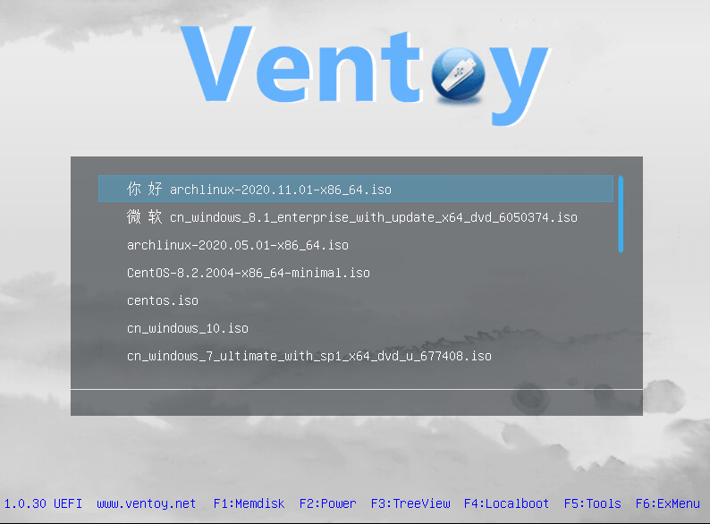
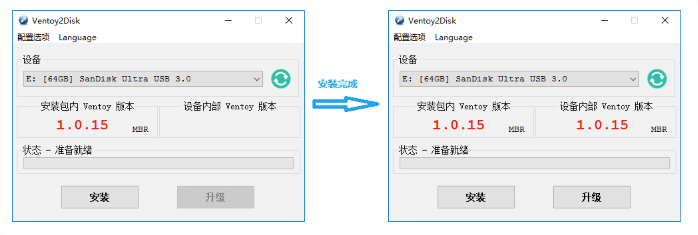
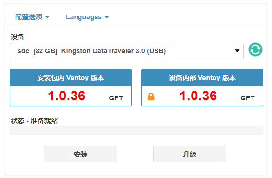

Ventoy：操作系统多合一的启动盘制作神器！
简单来说，Ventoy 是一个制作可启动 U 盘的开源工具。有了 Ventoy 你就无需反复地格式化 U 盘，你只需要把 ISO/WIM/IMG/VHD(x)/EFI 等类型的文件拷贝到 U 盘里面就可以启动了，无需其他操作。你可以一次性拷贝很多个不同类型的镜像文件，Ventoy 会在启动时显示一个菜单来供你进行选择。

1. 工具介绍
简单理解：分区一(PE) + 分区二(Images) = 不影响正常使用
目前已经测试了各类超过 720+ 个镜像文件，可以在 distrowatch.com 网站上查看收录的的操作系统列表。
100%开源且使用方便简单快速- 可以安装在
U盘/本地硬盘/SSD/NVMe/SD卡等设备上 - 直接从
ISO/WIM/IMG/VHD(x)/EFI文件启动且无需解开 - 支持
MBR和GPT分区格式 - 支持数据持久化
- 支持
Windows系统的自动安装部署 - 支持
RHEL/CentOS/Ubuntu Server等Linux系统的自动安装部署 - 镜像分区支持 FAT32/exFAT/NTFS/UDF/XFS/Ext2(3)(4) 文件系统
- 支持超过
4GB的ISO文件 - 支持插件扩展
- 支持向运行环境中插入文件
- 动态替换
ISO文件中的原始启动配置文件 - 高度可定制化的主题风格和菜单
- 启动过程中支持
U盘设置写保护 - 不影响
U盘日常普通使用
文件 SHA-256 发布日期 大小
ventoy-1.0.48-windows.zip 6f0200b68xxx3f06d6b05 2021-08-01 12 MB
ventoy-1.0.48-linux.tar.gz 7ca5ef89fxxx691c180b1 2021-08-01 14 MB
ventoy-1.0.48-livecd.iso a682ef252xxx2b474cda4 2021-08-01 46 MB
| Num | Feature | MBR | GPT |
|---|---|---|---|
| 1 | Legacy BIOS 模式 |  |
 |
| 2 | UEFI 模式 |  |
|
| 3 | 支持大于 2TB 的磁盘 |  |
 |
| 4 | 数据无损升级 | |
|
| 5 | 支持磁盘保留空间 | |
|
| 6 | 最大分区数目 | 4 | 128 |
2. 使用方式 - Windows
简单介绍下，在 Windows 操作系统上面的使用方式！
- [1] 下载工具并解压开
# github
https://github.com/ventoy/Ventoy/releases
# 官方
https://github.com/ventoy/Ventoy/releases
# 天翼云
https://cloud.189.cn/t/b2eMBrrmay2y
- [2] 直接执行
Ventoy2Disk.exe这个可执行文件- 注意在这里可以选择
MBR/GPT的分区格式
- 注意在这里可以选择

3. 使用方式 - Windows
简单介绍下，在 Windows 操作系统上面的使用方式！
- [1] 下载工具并解压开
# github
https://github.com/ventoy/Ventoy/releases
# 官方
https://github.com/ventoy/Ventoy/releases
# 天翼云
https://cloud.189.cn/t/b2eMBrrmay2y
- [2] 图形化安装方式
- 注意在这里可以选择
MBR/GPT的分区格式
- 注意在这里可以选择
# 打开终端执行
$ sudo sh VentoyWeb.sh -H 192.168.0.100 -P 8080
# 打开浏览器直接访问
http://192.168.0.100:8080

- [3] 命令行安装方式
- 注意在这里可以选择
MBR/GPT的分区格式
- 注意在这里可以选择
# 对应的U盘设备名称
$ sudo sh Ventoy2Disk.sh -i /dev/XXX
# 命令使用帮助
Ventoy2Disk.sh 命令 [选项] /dev/XXX
命令含义:
-i 安装ventoy到磁盘中 (如果对应磁盘已经安装了ventoy则会返回失败)
-I 强制安装ventoy到磁盘中，(不管原来有没有安装过)
-u 升级磁盘中的ventoy版本
-l 显示磁盘中的ventoy相关信息
选项含义: (可选)
-r SIZE_MB 在磁盘最后保留部分空间，单位 MB (只在安装时有效)
-s 启用安全启动支持 (默认是关闭的)
-g 使用GPT分区格式，默认是MBR格式 (只在安装时有效)
-L 主分区（镜像分区）的卷标 (默认是 Ventoy)
- [4] 拷贝镜像文件
- 安装完成之后，
U盘会被分成两个分区 - 第
1个分区为镜像分区，只需要把ISO/WIM等文件拷贝到这里面即可 - 第
2个分区为EFI系统分区，用来保存UEFI模式下的启动文件以及Ventoy的其他文件
- 安装完成之后，
4. 插件扩展
Ventoy会为每一个插件定义一个json配置项用来设置与此插件功能相关的属性！
比如 Ventoy 的启动菜单你可能不太喜欢，如何自己定制主题吗？再比如 Ventoy 的界面字体你有可能不喜欢，那如何自定义启动菜单中显示的文字呢？又比如，我想在 Ventoy 中增加一些功能，比如自动安装系统，等等。这时，我们就可以使用自己写的，或者他人写的第三方插件来补全我们需要定制化的地方，上述所有问题都可以通过插件来解决。
所有的插件配置规则都放在 ventoy.json 文件中，此文件位于 /ventoy 目录下。插件其他相关的文件也都必须位于 /ventoy 目录下。这里的 /ventoy 目录是放在第 1 个分区，也就是放镜像文件的分区中（不是 32MB 的 VTOYEFI 分区）。这个分区在刚安装完 Ventoy 的时候是空的，什么都没有。/ventoy 目录和 ventoy.json 文件都是需要用户自己创建的。
| 编号 | 插件名称 | 对应地址 |
|---|---|---|
| 1 | 全局控制插件 | https://www.ventoy.net/cn/plugin_control.html |
| 2 | 文件列表插件 | https://www.ventoy.net/cn/plugin_imagelist.html |
| 3 | 主题插件 | https://www.ventoy.net/cn/plugin_theme.html |
| 4 | 菜单类型插件 | https://www.ventoy.net/cn/plugin_menuclass.html |
| 5 | 菜单别名插件 | https://www.ventoy.net/cn/plugin_menualias.html |
| 6 | 自定义菜单插件 | https://www.ventoy.net/cn/plugin_grubmenu.html |
| 7 | 自动安装插件 | https://www.ventoy.net/cn/plugin_autoinstall.html |
| 8 | 文件注入插件 | https://www.ventoy.net/cn/plugin_injection.html |
| 9 | 数据持久化插件 | https://www.ventoy.net/cn/plugin_persistence.html |
| 10 | Wim 文件启动插件 | https://www.ventoy.net/cn/plugin_wimboot.html |
| 11 | Linux vDisk 启动插件 | https://www.ventoy.net/cn/plugin_vtoyboot.html |
| 12 | 启动配置替换插件 | https://www.ventoy.net/cn/plugin_bootconf_replace.html |
| 13 | 密码插件 | https://www.ventoy.net/cn/plugin_password.html |
# 示例配置 - ventoy.json
{
"control": [{ "VTOY_DEFAULT_MENU_MODE": "1" }, { "VTOY_FILT_DOT_UNDERSCORE_FILE": "1" }],
"theme": {
"file": "/ventoy/theme/blur/theme.txt",
"gfxmode": "1920x1080"
},
"auto_install": [
{
"image": "/ISO/cn_windows_server_2012_r2_vl_x64_dvd_2979220.iso",
"template": "/ventoy/script/windows_unattended.xml"
},
{
"image": "/000/centos.iso",
"template": "/ventoy/script/centos_kickstart.cfg"
}
]
}
5. 相关链接
送人玫瑰，手有余香！